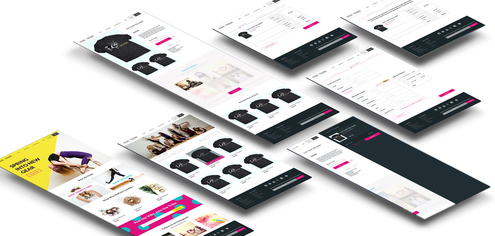

Vibe Tribe is a hypothetical eccomerce site for Lotus House of Yoga in Nebraska. They are known through the community for the merchandise and free spirit mentality. With wireframes, prototyping and a firm understanding of who they are as a collective, I sought out to make a fun, intuitive site where yogi's could find their favorite gear.

The Problem
Online stores exist for everything. Being able to design an elegant shopping experience that works well on all devices can increase sales and set your company ahead of your competitors. Vibe Tribe sells a variety of apparel, such as t-shirts, leggings, and candles. Several platforms exist for eCommerce, like Shopify or BigCartel.
Research
To get a deeper understanding of how I should tackle this project I researched many different eccomerce sites and found took note of pain points on each site and noted what they did extremely well. I also wanted to immerse myself in the collective I would be designing for, so I took classes, chatted with yogis and asked what drew them to Lotus House of Yoga in the first place. Having a firm grasp of what they needed as a brand and an eccommerce site helped me iterate the proceeding steps.
User Stories
Bloc presented me with six goals that the user of Vibe Tribe would want to accomplish while using the site. I used these as well as few I added on myself to help keep me goal oriented during the process.
As a user, I want to browse products
As a user, I want to view details about a specific product
As a user, I want to view ratings and reviews for a product
As a user, I want to add a product to my cart
As a user, I want to pay for my items with a credit card, or PayPal
As a user, I want to sign up for an account
Wireframes & Prototyping
I started with rough, rapid wireframes on paper. Once the best options were chosen I brought them into Axure to make a low-fidelity wireframes that I could use as prototypes to have people run through and give me feedback. For this project I also used InVision, a high-fidelity prototyping tool, that allowed me to get a true sense of how a user would run through the site. The main problem I ran into while making this site was how to make the proccess of choosing and buying an item, which is a complicated process, fast, efficient and intuitive.
Design
Branding Vibe Tribe was an extremely fun task. Lotus House of Yoga is a vibrant yoga studio and I knew their eccommerce had to mimic the energy and joy that you feel when you walk into any of their studios. I used bright colors, their vivid imagry and a friendly typeface to welcome users to the site and make them excited to shop. I produced the final mockups of this project in Sketch. Below are a few of the main pages in full form.